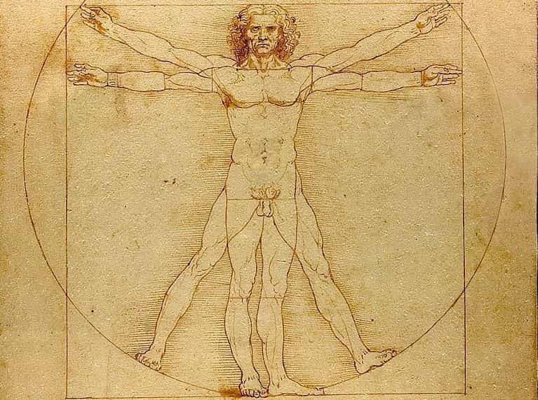
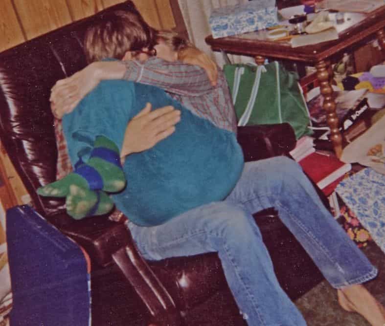
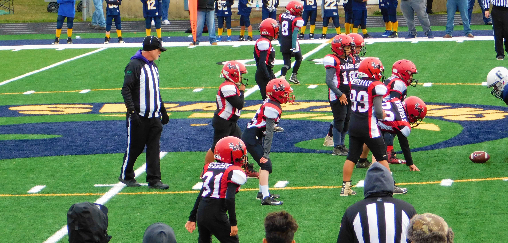

My wife of 35 years died six days ago after a long illness. I didn’t start out to write this but, when I started writing her eulogy, I found that what I really wanted to say didn’t belong in a eulogy and couldn’t be read in church. What I wanted to say speaks to the core of manhood and is better suited for ROK.
These thoughts have been on my mind the last few months, but readers will need background. Writers for ROK fall into two groups. Those in the larger group evolved over eons of time by random mutations and natural selection. They exist to propagate their genes. Their social agenda focuses on this, getting better with learning and experience.
I’m in the smaller group, created in the image of God with a body, a soul and a spirit.
The parts of a man

My body is standard issue male. Pretty simple stuff, until puberty began and my body responded according to the timing of various chemicals and demanded sexual activity with females. It poked out toward the young ladies, all on its own and without warning. I learned to control these imperative urges and tell myself “no, not yet,” as all men must, if they are to be men and not beasts.
My body does not have a soul, rather my soul is me and I have a body. My soul is that spark of self-awareness that knows itself as “I”. It distinguishes men from the animals.
I also have a spirit which holds the sum total of my memories, life experiences, learned behavior, fears, desires and so on. It determines who I am and how I behave. I believe manhood is embedded in my spirit, my body is merely masculine.
So as a man, I am a soul, currently residing in a piece of meat, and guided by a spirit. As a man I am responsible for my own behavior. I have responsibility to my community and to those around me. The meat doesn’t care a whit about these things, but the soul controls the meat and the meat does my bidding, because I am a man.
To paraphrase SFC Gregory Stube (ret.): A man defines himself, not by what he does with his body, but by what he does with his soul.
Loss
I used to love, lead, protect and provide for my wife, but no more. The link between my wife and I was existential, and when it was broken, my existence was diminished. I am incomplete; my universe has holes in it, my bed doesn’t feel right, the air sounds different. I am a widower and I understand what I had, by the shape of the hole. But I find that what I lost is much more than what I gained when we married. Where did it come from?
I remember the first time I saw her. She was young, lithe, beautiful, and full of life. And she was not mine. She was not available. But two years later she moved to my town and we began dating. The meat rose up and the spirit wavered but the soul beat it down and we waited and obeyed “Thou shalt not” until…
In due time, “until” arrived and, in an ancient ceremony, her father, her family, our Church and my family, agreed that We Shall. The old, dour, sour church ladies gave her enticing undergarments in gaily wrapped boxes, along with much encouragement. That night, for the first time for each of us, We Did. Without guilt, fear, or shame. And it was awkward and it was wonderful and we were one flesh for over 35 years.

That first year we shared our bodies on an old lumpy bed and on the beach and wherever was convenient and private. We got pretty good at it but, in time, as our souls grew together, the two meats became sated and passions cooled. I began to wonder if this was all there was.
Then we got pregnant. She grew great with child, her belly stretched, her breasts grew and her face puffed. He was born and our lives were never the same. The young lithe body I had married was now a loosely packaged, jiggly, wiggly mother and, contrary to my expectations, my desire for her grew. We learned to Do quietly so as not to wake the baby. And It was better than ever.

We added more children and experienced PTA and sports and learner’s permits and graduations and first jobs and lost jobs and there was that call in the night for bail. Our souls grew together and we trained the meats and experienced the best sex ever. The older we got and the more wrinkles we grew, the closer our souls became.
A pure love
Our brood began moving out on their own and we grew older together. The sex became less frequent but more satisfying. Then the cancer struck and the slow end began. Her body deteriorated but my love for her increased even more.
At the end there was nothing that would interest a younger man, even if drunk, but to me, she was a goddess. The mother of my children, my darling, my soulmate, my wife.
So, only after she is gone do I realize that my desire for her, which had once been the craving for her young body, had become the desire for the soul that had become intertwined with mine.
Our love had passed the physical, becoming spiritual, and the joining of our aging bodies amplified the joining of our spirits and our souls were satisfied.
I think I now understand why God created us body, soul, and spirit, and also male and female.
If a man never gets beyond his body’s desire for young flesh and settles down with his life mate, he will never be satisfied. He will be like an athlete who eats the frosting off the top of the cake and is not hungry when the steak is served. He doesn’t grow strong, he gets sickly.
Celebrate and support your body’s masculinity, but make your soul control your body and rule your spirit. That’s manhood.
Read Next: In Defense Of Marriage